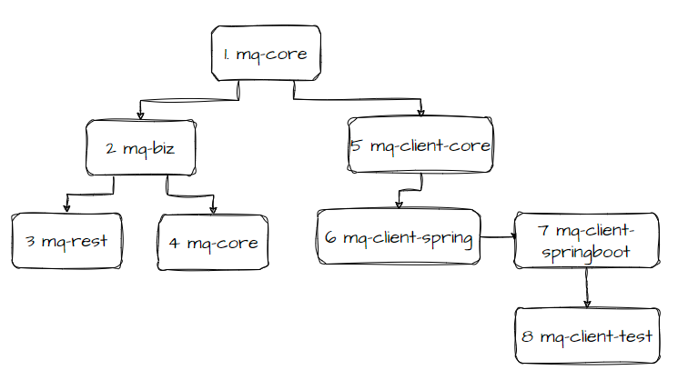

CatMQ Develop Guide #
This module mainly introduces the code structure and project modules of the project, which is a convenient reference for students who plan to study this project carefully and those who want to develop it again.
1. Module Structure #

- mq-client\mq-core mq-core is the most basic module in catMQ, as it name,which contains the most basic dto objects and public methods. The basis for all projects
- mq-biz mq-biz is the business logic processing layer, service and server-side broker and page operation and maintenance-side portal, which contains database entities and many scheduled polling threads, used by mq-rest module and mq-ui module
- mq-rest mq-rest is the broker server of catMQ, which is used to provide rest services to clients. It mainly provides message sending, message pulling, heartbeat requests, and rebalancing.
- mq-ui catMQ’s portal interface provides users with a visual operation and maintenance interface.
- mq-client\mq-client-core The core of the client, does not rely on third-party jar packages except for the http, and encapsulates the client’s interface.
- mq-client\mq-client-spring mq-client-core is encapsulated in spring to simplify operations and provides some service statistics interfaces
- mq-client\mq-clent-springboot mq-client-core springboot start module
- mq-client-test catMQ client demo
2. Local Develop Environment #
In application.properties config file default set spring.profiles.active=fat，set as fat。
and the jdbc connection is in application.properties too，there are two modules that require database configuration
connection are mq-rest and mq-ui.
3. Start in IDEA #
To locally start the application, you need to launch two services. Click on ‘Debug’ for ‘RestApplication’ to start mq-rest. Then click on ‘Debug’ for ‘UiApplication’ to start mq-ui, as shown in the following screenshot:"